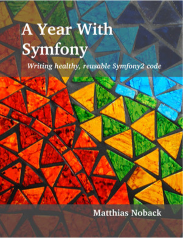

Мы уже давно работаем с Symfony, но всегда стремимся узнать что-то новое и развиваться в интресующих нас направлениях. Но до сих пор приходилось искать отрывки информации в интернете, теперь у нас есть книга “A Year With Symfony”c, где собраны полезные советы и решения на многие темы касающиеся разработки с использованием этого замечательного фреймворка.
Кратко по содержанию книги:
The journey from request to response - раздел рассказывает о всем цикле выполнения приложения, начиная от запроса к серверу, заканчивая отправкой ответа. Рассмотрены все события возникающие при этом цикле, а также, что немаловажно - примеры использования этих событий.
Patterns of dependency injection - описана вся работа с DI: создание сервисов вручную и динамически, настройка и типы зависимостей, теги, параметры.
Project structure - советы по организации контроллеров, примеры рефакторинга.
Configuration conventions - как уже понятно из названия - соглашения по настройке, выбору форматов для конфигурации разных частей приложения.
Security - все, что необходимо знать о безопасности: аутентификация, проверка входящих данных, экранирование вывода, прочие советы по улучшению безопасности приложения.
Being a Symfony developer - советы по организации кода и построению правильной архитектуры В целом книга несет идею организации слабой связанности частей приложения, разделения ответственности, решение мелких задач мелкими классами. Простые и давно известные вещи, применять которые на практике иногда оказывается не так просто, и совершенствовать свои навыки в которых надо постоянно.
архитектуры. Так что книга однозначно “Must Have” и лично я бы посоветовал ее каждому симфонисту.